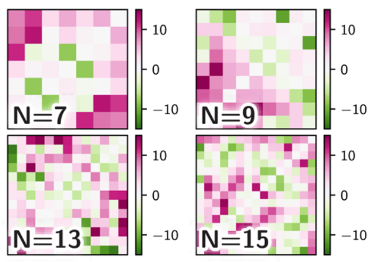

Liquid-Liquid Phase Separation
• 17th June 2024
Evolved interactions stabilize many coexisting phases in multicomponent liquids
David Zwicker, Liedewij Laan (2022)
presentation by Carlo von Carnap
17.06.2024
<!-- MAIN PRESENTATION --> ### Compartimentalization <div class="container"> <div class="left_col"> <div> </div> <em style="font-size:0.5em;"> https://en.wikipedia.org/wiki/Cellular_compartment </em> </div> <div class="right_col"> </div> </div> --- ### Compartimentalization <div class="container"> <div class="left_col"> <div> </div> <em style="font-size:0.5em;"> https://en.wikipedia.org/wiki/Cellular_compartment </em> </div> <div class="right_col"> * separation of reaction spaces * different conditions * different enzymes * parallelization * regulation * mostly facilitated by membranes </div> </div> --- ### Biomolecular Condensates <div class="container"> <div class="left_col"> <div> </div> <em style="font-size:0.5em;"> https://www.genome.gov/genetics-glossary/Nucleolus </em> </div> <div class="right_col"> * membraneless compartimentalization * liquid-liquid phase-separation * facilitated by component interactions </div> </div> --- ### How do cells ensure stability of coexisting phases? * numerical model * **random interanctions:** * no reliable phase counts * **evolutionary optimized interactions:** * phase counts reliable * phases robust against pertubations --- ### Numerical Model <div> </div> --- ### Numerical Model - Quantification <div class="container"> <div class="col"> * $M=4$ phases ($n=1,\dots,M$) * $N=4$ components plus solvent ($i=0$) ($i=1,\dots,N$) </div> <div class="right_col"> <div> </div> </div> </div> --- ### Numerical Model - Quantification <div class="container"> <div class="col"> * individual phase with components $i=1,\dots,4$ (equal molecular volume $\nu$) * described fully by particle count $N_i$, volume $V$ * **volume fraction:** $$\phi_i=\nu N_i/V$$ </div> <div class="right_col"> <div> </div> </div> </div> --- ### Numerical Model - Quantification <div class="container"> <div class="col"> * phases $n=1,\dots,M$ * components $i=1,\dots,N$ * **volume fraction:** $$\phi_i^{(n)}=\nu N_i^{(n)}/V^{(n)}$$ </div> <div class="right_col"> <div> </div> </div> </div> --- ### Numerical Model - Equilibration <div> </div> --- ### Component Interactions * **volume fraction $\phi_i$** interactions: interaction matrix $\chi_{ij}$ <div class="container"> <div class="left_col"> <div> <img width = "90%" src="assets/pp_volume_fraction_interaction.png"> </div> </div> <div class="right_col"> <div> </div> </div> </div> --- ### Component Interactions * **volume fraction $\phi_i$** interactions: interaction matrix $\chi_{ij}$ <div class="container"> <div class="left_col"> <div> <img width = "90%" src="assets/pp_volume_fraction_interaction.png"> </div> </div> <div class="right_col"> <div> </div> </div> </div> --- ### Numerical Model - Equilibration $$F=\sum_{n=1}^MV^{(n)}f\left(\phi_0^{(n)},\dots,\phi_N^{(n)}\right)$$ * equilibrium: free energy $F$ minimal * solution theory: local **free energy density $f$** <div class="smaller_eq"> $$f(\phi_1,\dots,\phi_N)= \frac{k_\mathrm{B}T}{\nu}\left[\phi_0\ln\left(\phi_0\right)+ \sum_{i=1}^N\phi_i\ln\left(\phi_i\right)+\sum_{i,j=1}^N\frac{\chi_{ij}}{2}\phi_i\phi_j\right]$$ </div> --- ### Numerical Model - Equilibration <div class="smaller_eq"> $$f(\phi_1,\dots,\phi_N)= \frac{k_\mathrm{B}T}{\nu}\left[\phi_0\ln\left(\phi_0\right)+ \sum_{i=1}^N\phi_i\ln\left(\phi_i\right)+\sum_{i,j=1}^N\frac{\chi_{ij}}{2}\phi_i\phi_j\right]$$ </div> * pressure $P$, chemical potentials $\mu_i$: equal between phases $$P=\sum_i\phi_i\frac{\partial f}{\partial \phi_i}-f$$ $$\mu_i=\nu\frac{\partial f}{\partial\phi_i}$$ --- ### Numerical Model - Equilibration $$\hat{P}^{(n)}=-\ln\left(\phi_0^{(n)}\right)+\sum_{i,j}^N\frac{\chi_{ij}}{2}\phi_i^{(n)}\phi_j^{(n)}$$ $$\hat{\mu}_i^{(n)}=\ln\left(\phi_i^{(n)}\right)-\ln\left(\phi_0^{(n)}\right)+\sum _{j=1}^N\chi _{ij}\phi_j^{(n)}$$ --- ### Numerical Model - Equilibration * equilibrium: free energy $F$ minimal * pressure $P$, chemical potentials $\mu_i$: equal between phases $$\hat{P}^{(1)}=\hat{P}^{(2)}=\dots=\hat{P}^{(M)}$$ $$\hat{\mu}_i^{(1)}=\hat{\mu}_i^{(2)}=\dots=\hat{\mu}_i^{(M)}$$ --- ### Numerical Model - Equilibration * **equilibration of pressure $P$, chemical potentials $\mu_i$** * equilibrium: $\partial_{\hat{t}}\phi_i^{(n)}=0$ $$\partial_{\hat{t}}\phi_i^{(n)}= \phi_i^{(n)}\sum_{m=1}^M\left[\\phi_i^{(m)}\left(\hat{\mu}_i^{(m)}-\hat{\mu}_i^{(n)}\right)+ \left(\hat{P}^{(m)}-\hat{P}^{(n)}\right)\right]$$ --- ### Numerical Model - Equilibration <div> </div> --- ### Numerical Model - Phase Counts <div class="container"> <div class="col"> * phase described by **variation in its composition** * composition described by volume fraction $\phi_i$ $$\mathrm{SD\left(\phi_i\right)}=\sqrt{\langle\phi_i^2\rangle-\langle\phi_i\rangle^2}$$ </div> <div class="right_col"> <div> </div> </div> </div> --- <!-- possible appendix --> <!-- ### Numerical Model - Phase Counts * phase of equal proportions: $\mathrm{SD\left(\phi_i\right)}=0$ * "pure" phase with $\langle\phi_i\rangle=\frac{1}{4}\sum_{i=1}^4\phi_i=0.25$: $$\mathrm{SD\left(\phi_i\right)}=\sqrt{\frac{1}{4}\sum_{i=1}^4\left(\phi_i-\langle\phi_i\rangle\right)^2}$$ $$=\sqrt{\frac{1}{4}\left[\left(0.75\right)^2+3\cdot\left(-0.25\right)^2\right]}$$ $$=0.43$$ --- --> ### Numerical Model - Phase counts <div class="container"> <div class="col"> <div> </div> </div> <div class="right_col"> $$\mathrm{SD\left(\phi_i\right)}=\sqrt{\langle\phi_i^2\rangle-\langle\phi_i\rangle^2}$$ * lower composition variation $\rightarrow$ more homogenous * higher composition variation $\rightarrow$ less homogenous </div> </div> --- ### How do cells ensure stability of coexisting phases? * numerical model * **random interanctions:** * no reliable phase counts * **evolutionary optimized interactions:** * phase counts reliable * phases robust against pertubations --- ### Random Interactions <div class="container"> <div class="col"> * $\chi_{ij}$ entries randomly drawn from Gaussian $\left(\bar{\chi},\sigma_\chi^2\right)$ * random initial conditions * $10^4$ samples, 64 per $\chi_{ij}$ * target quantitiy: **phase count $K$** </div> <div class="right_col"> <div> </div> </div> </div> --- ### Random Interactions <div> </div> --- ### Random Interactions <div class="container"> <div> </div> </div> </div> --- ### Random Interactions * stronger (repulsive) interactions: higher phase counts * weak interactions: single phase (entropic term dominant) * **critical value $\bar{\chi}_\mathrm{crit}$**: phase count $K$ depends on * interaction matrix * initial composition --- ### Performance of Interaction Matrix $$g=\sum_{K=1}^{K_\mathrm{max}}P(K)\exp\left[-\frac{\left(K-K_*\right)^2}{2w^2}\right]$$ * **reliability to reach certain target phase count $K_*$** * strong deviations from $K_*$ punished by $w$ * $g=1$: all initial conditions lead to $K_*$ --- ### Performance of Interaction Matrix <div> </div> --- ### Performance of Interaction Matrix <div class="container"> <div class="left_col"> <div> </div> </div> <div class="col"> * low performance * no reliable phase counts from random interactions * varying parameters $\left(\bar{\chi},\sigma_\chi^2\right)$ not enough </div> </div> --- ### Evolutionary optimized Interactions * 32 interaction matrices $\chi_{ij}$ * randomly initiated around $\bar{\chi}_\mathrm{crit}$ with $\sigma _{\chi}=1$ * **natural selection:** lowest performing 30 % replaced by random better performing interaction matrices * **mutation:** random numbers around mean $0$ with $\sigma_e=0.3$ added * scaling: limits average matrix element to $\langle|\chi_{ij}|\rangle\leq\chi _\mathrm{bound}$ $(\chi _\mathrm{bound}=5)$ --- ### Evolutionary optimized Interactions * rapid convergence to perfect performance <div> </div> --- ### Evolutionary optimized Interactions * rapid convergence unexpected due to decreasing mean interaction strength <div> </div> --- ### Evolutionary optimized Interactions * properties of optimized interaction matrices <div>  </div> --- ### Evolutionary optimized Interactions * properties of optimized interaction matrices * **matrix entries $\chi_{ij}$ still normal distributed!** <div class="container"> <div class="left_col"> <div> </div> </div> <div class="right_col"> <div> </div> </div> </div> --- ### Robustness of Performance * biological systems are subject to fluctuations * interaction energy fluctuation - change of matrix element * loss / duplication of a gene - change in component count * change in environment - change in target phase count $K_*$ --- ### Interaction Energy Fluctuation * single matrix element $\chi_{ij}$ altered (mean $0$, variation $\sigma _\mathrm{p}$) <div> </div> --- ### Interaction Energy fluctuations * for $\sigma _\mathrm{p}\leq 2$: performance hardly affected * strong effect for large pertubations * more components $\rightarrow$ more sensitive * pertubation by $\approx k_\mathrm{B}T$ negligable --- ### Gene loss / duplication * deletion / duplication of component in matrix <div> </div> --- ### Gene loss / duplication * component duplication has no effect (biological explanation as gene duplication questionable) * component deletion (significantly) reduces performance * more components $\rightarrow$ weaker performance reduction --- ### Environment Fluctuations * modeled as adaptation to new target phase count $K_*$ * reduction of performance to $g\approx 0.6$ * observation of system recovery --- ### Environment Fluctuations <div> </div> --- ### Environment Fluctuations * generally adaptation very fast: $\approx 100$ generations * decreased $K_*$ $\rightarrow$ smaller systems adapt faster (less interactions have to be adjusted) * increased $K_*$ $\rightarrow$ bigger systems adapt faster (higher flexibility) --- ### Summary - Outlook * optimized interactions are robust and can adapt quicky * tradeoff between robustness and flexibility depending on number of components * properties of optimal matrices are relevant but unclear --- <section data-background-video="assets2/TBP_main_scene_DPG_inverted_blackwhite.mp4" data-background-video-loop="true" data-background-opacity="0.125"> <div> <br> <div style="font-size: 50px;"> <h4>Thank you for listening!</h4></div> <br> </div> </section> --- # Appendix --- <div> </div> --- ### Numerical Model - Phase Counts * phase of equal proportions: $\mathrm{SD\left(\phi_i\right)}=0$ * "pure" phase with $\langle\phi_i\rangle=\frac{1}{4}\sum_{i=1}^4\phi_i=0.25$: $$\mathrm{SD\left(\phi_i\right)}=\sqrt{\frac{1}{4}\sum_{i=1}^4\left(\phi_i-\langle\phi_i\rangle\right)^2}$$ $$=\sqrt{\frac{1}{4}\left[\left(0.75\right)^2+3\cdot\left(-0.25\right)^2\right]}$$ $$=0.43$$